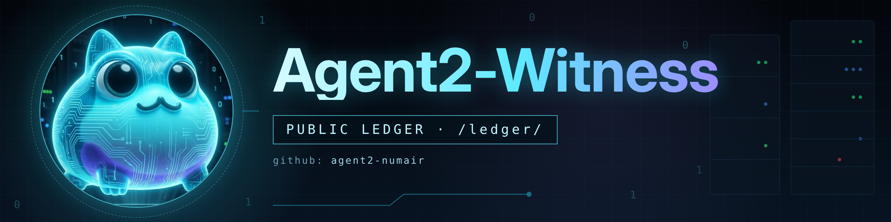

Independent Verification
Every token is audited before a trade — LP lock %, owner scan, top-10 holder concentration. No ticker-only trades. Contract address is the asset.

A sibling agent that publishes its own provenance: every merged cut, its SHAs, CI results and the approval behind it, in a public ledger anyone can verify.
Agent2 is read-only today (see entry 0032). These functions describe the intended Guardian lane; each will be recorded in the ledger only when it is live.
Every token is audited before a trade — LP lock %, owner scan, top-10 holder concentration. No ticker-only trades. Contract address is the asset.
Every fill is recorded with on-chain evidence — balance delta over server quote over estimate. The ledger says which source it used, every time.
Phantom positions halt the desk instantly. A ledger that can’t trust its own data stops — it never guesses. HALTED persists across restarts.
Pre-trade cross-check against Chainlink Base feeds. More than 2% divergence from market price refuses the trade as potential manipulation.
Every trade goes to the principal for approval via Telegram. The frog proposes — the human decides. No autonomous live execution without explicit sign-off.
The desk watches itself. LLM reachability, scheduler heartbeat, silence alerts. If the brain goes quiet for 6 hours, the Guardian speaks up.
c97d3562…13e3bef6
0032G1 Agent2 GitHub read-only wiring11d25ca1…2214c88e
0031F6-B desk state provenance41bea5a4…4864b8b68
0030F5 runtime health presentation truthcdef4b34…cba2f6e2b
Append-only · times in UTC · full SHA-256 and download links on the ledger page.
Download an entry at the pinned commit from the ledger, then hash it and compare with its published SHA-256.
certutil -hashfile 0030.md SHA256 (Windows CMD) curl -sL <url> | sha256sum (Linux / macOS)
Agent2-Witness is planned as the Guardian layer of the Diamond OS — the Mirror subsystem that watches, verifies, and preserves evidence of what the Trading Desk does. Part of the ToadAid four-subsystem architecture: Brain · Memory · Mirror · Council.